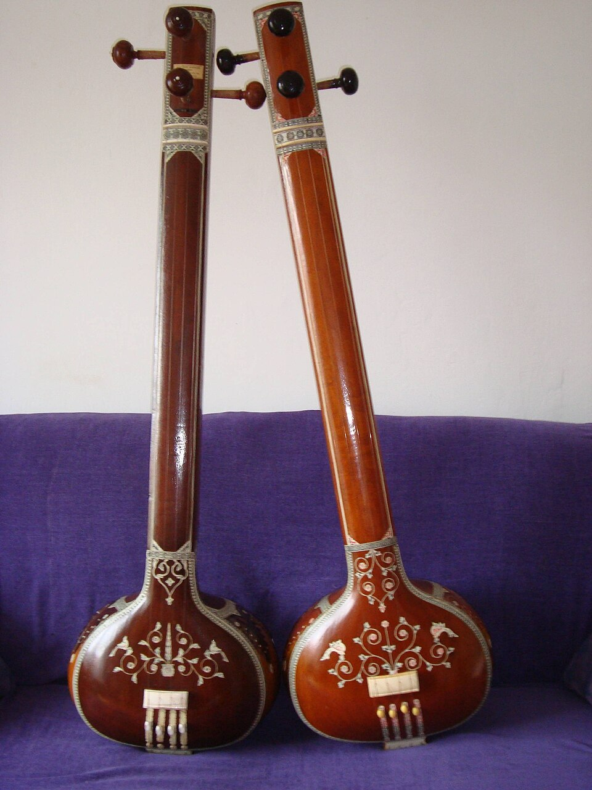
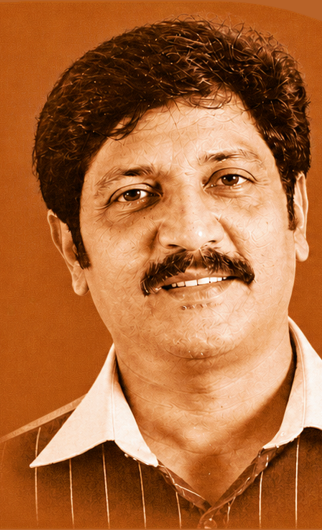
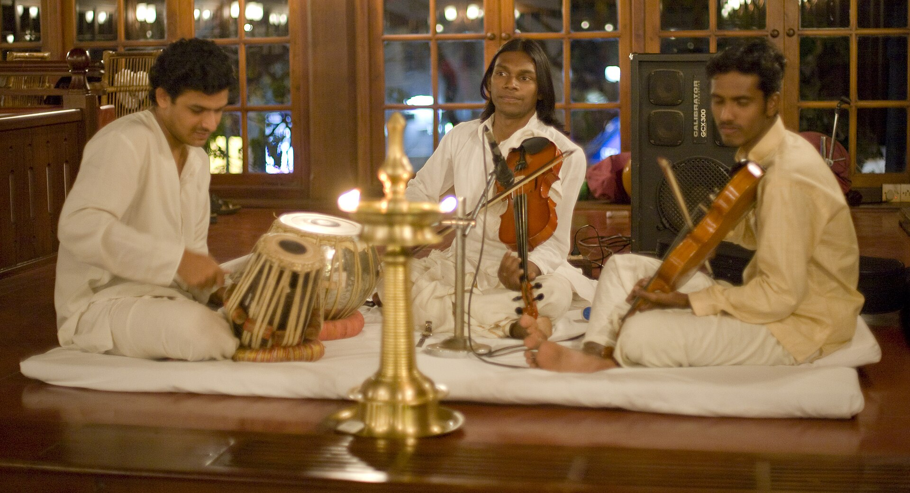

01
శిక్షణ
Classroom training
Weekly batches for beginners and trained singers, from basic exercises to keertanas and light music.

Our inspiration మా స్ఫూర్తి
Dr. Talari Satish garu was a rare all-round artist. Of the 64 traditional arts (చతుష్షష్టి కళలు), he had mastered 19, and singing was the one closest to his heart.
He sang on countless stages, and he gave just as much off the stage, guiding and introducing many singers who might otherwise never have been heard. After his passing, his sister and brother-in-law started Swara Raga Sudha in his name so that his music and his generosity live on. The letters DTS in our name stand for him.
How we began మా ప్రయాణం
A singer and artist of 19 arts who filled stages with music and devotion.
He helped many people find their voice and introduced them to the stage.
His sister and brother-in-law founded Swara Raga Sudha (DTS) to continue his work.
Our tradition వాద్యాలు
The instruments that accompany every song we sing. Our singers learn to listen to them, keep pace with them and perform alongside them.
Why join ఎందుకు?
Swara, sruti and laya taught step by step, from sarali varisai to keertanas.
Songs of Tyagaraja, Annamayya and Ramadasu, learnt with meaning and bhava.
Just as Satish garu did, we introduce new singers to real audiences.
A friendly circle of singers, accompanists and listeners who learn from each other.
గోదావరి తీరాన సంగీత ప్రవాహం
Rajahmundry, the cultural capital of Andhra Pradesh, has always been a home for poets, artists and singers. Swara Raga Sudha adds new voices to that river of music.
Inspiration స్ఫూర్తి
The great singers whose music we study, sing and celebrate.
Photographs from Wikimedia Commons under free licences. See photo credits.
Four batches each week. Join the one that suits your level. Not sure which? Talk to us.
| Batch | Day | Time | Focus |
|---|---|---|---|
| Beginners | Saturday | 5:00–6:30 pm | Swara practice, simple songs |
| Intermediate | Sunday | 9:00–11:00 am | Geethams, varnams, keertanas |
| Advanced | Wednesday | 6:30–8:30 pm | Improvisation, concert prep |
| Group singing | Friday | 7:00–8:30 pm | Annamayya & Ramadasu |
Sample timings. Confirm them with the committee before publishing.
Our services మేము చేసేది
Learn the art of singing through classes that blend traditional foundations with the joy of performing.

శిక్షణ
Weekly batches for beginners and trained singers, from basic exercises to keertanas and light music.

వ్యక్తిగత శిక్షణ
One-to-one sessions on voice, sruti alignment and repertoire for singers preparing for the stage.

ప్రదర్శనలు
Concerts and group programmes that give local singers a proper stage and an audience.
Events రాబోయే కార్యక్రమాలు
Sample listings. Real dates will replace these.
Founding members help shape the classes, the programmes and the committee. Fill in the short form and we will contact you.
In loving memory స్మృతిలో
Indian tradition speaks of 64 arts (చతుష్షష్టి కళలు), covering music, poetry, painting, drama and many more. Very few people master even one. Dr. Talari Satish garu mastered 19 of them.
Singing was his first love. He gave a great many stage performances, and he was known just as much for his generosity: he helped many people learn to sing and introduced them to the stage.
When he passed away, his sister and brother-in-law decided that his work should not stop. Swara Raga Sudha (DTS) is their tribute: an organisation in his name that does what he always did, which is to bring out the singer in everyone.
19 of 64 కళలు
Singing was at the centre, but his talent reached far beyond it.
Add the list of the 19 arts here (for example: vocal music, instrumental music, drama, poetry…).
Founders వ్యవస్థాపకులు
Swara Raga Sudha was founded by Dr. Talari Satish garu's sister and brother-in-law to continue his work in Rajahmundry.
Founder
Dr. James Watt Kommu is a visionary entrepreneur, philanthropist, and Vice President of Samanvaye Foundation. He leads multiple organizations, including Global Infotech Solutions, R.L. Klein, Sonus Software Solutions, and SQL Data Solutions Inc. His leadership reflects a strong commitment to innovation, business excellence, social empowerment, and community development. As President of the Telugu Association of Utah and Founder of SJK Entertainments, he actively promotes cultural heritage and community engagement.
HONORY PRESIDENT
Sudha Kommu is a dedicated leader and philanthropist with a BA LLB qualification. As Honorary President of DTS Swara Raga Sudha, she is committed to promoting music, arts, cultural heritage, and community engagement while inspiring young talent and preserving artistic traditions.
Objectives లక్ష్యాలు
Committee కార్యవర్గం
The office bearers and executive committee who guide Swara Raga Sudha, together with our founders.
Values మా విలువలు
Steady daily practice matters more than talent.
Learning with respect for teachers, tradition and each other.
No audition and no age limit. Every voice is welcome.
కార్యక్రమాలు
Home / Programmes
Concerts are open to the public unless marked for members only.
Sample listings. Tell me the real dates and venues and I will replace them.
| Batch | Day | Time | Focus |
|---|---|---|---|
| Beginners | Saturday | 5:00–6:30 pm | Basic exercises, swara practice, simple songs |
| Intermediate | Sunday | 9:00–11:00 am | Geethams, varnams, keertanas |
| Advanced | Wednesday | 6:30–8:30 pm | Keertanas, improvisation, concert preparation |
| Group singing | Friday | 7:00–8:30 pm | Annamayya and Ramadasu sankeertanas |
Sample timings. Confirm them with the committee before publishing.
Our repertoire draws on great Telugu composers. Choose one to read a short note.
గ్యాలరీ
Home / Gallery
Legends, instruments and the Godavari. Photographs from our own programmes will be added here.
Practice సాధన
Two simple tools for daily practice. Sound plays only after you press a button.
A four-string tambura: Pa (or Ma), Sa, Sa, lower Sa. Pick your kattai and sing along.
Eight beats: a laghu of four (clap, little, ring and middle fingers), then two drutams (clap and wave each).
సభ్యత్వం
Home / Contact
Every member can attend members-only sabhas and vote on the committee.
Get in touch సంప్రదించండి